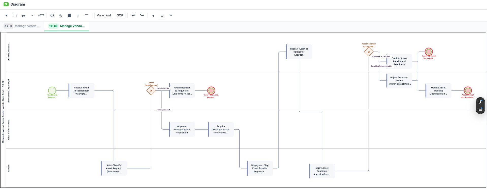

Fortæl, hvordan processen kører. Ailean tegner den. Describe the process out loud. Ailean draws it.
Ailean interviewer den, der kender processen, laver svarene om til et BPMN-diagram, foreslår forbedringer og lægger en projektplan. Det tager under en time.
Ailean interviews the person who knows the process, turns the answers into a BPMN diagram, suggests improvements and drafts a project plan. It takes less than an hour.
Steps
- 1Invoice receiptAccounts staff
- 2Verify against purchase orderAccounts staff
- 3Manual system entryAccounts staff
- 4Procurement review and approvalProcurement head
- 5Department head sign-offDepartment head
- 6Process completeFinance
Roles
- Accounts Receivable Staff
- Procurement / Purchase Department Head
- Department Head
Exceptions
- Amount or coding wrong: vendor sends a corrected invoice
- No purchase order found: create one, check for duplicates
Known issues
- Manual entry invites data entry errors
- Nobody is told when the invoice is ready for payment
Replaces manual receipt and data entry.
Matches invoices to purchase orders and flags duplicates.
A formal gate before a purchase order can be created.
Cycle time, rejection rates and bottlenecks, visible to all roles.
Digital sign-off with an audit trail.
Estimated gains, TO-BE against AS-IS
Key deliverables
- Implement OCR and automated invoice data extraction
- Establish PO creation approval workflow with policy engine
- Implement invoice processing dashboard and KPI monitoring
The plan opens as a project board with tasks, milestones and risks.
Fem trin, én arbejdsgangFive steps in one sitting
Du går fra en mundtlig beskrivelse til et projekt, der kan sættes i gang, uden at skifte værktøj undervejs.
You go from a spoken description to a project that is ready to start, without changing tools along the way.
- 1
BeskrivDescribe
Lad Ailean interviewe procesejeren med opfølgende spørgsmål om undtagelser. Du kan også optage selv eller indsætte en transskription.
Let Ailean interview the process owner, with follow-up questions about exceptions. You can also record it yourself or paste a transcript.
- 2
GennemseReview
Svarene bliver til navn, afgrænsning, roller, trin, undtagelser og kendte problemer. Ret det, der er forkert, før diagrammet tegnes.
The answers become a name, scope, roles, steps, exceptions and known issues. Correct anything that is wrong before the diagram is drawn.
- 3
Diagram
Ailean tegner AS-IS som BPMN 2.0 med svømmebaner og beslutningspunkter. Diagrammet kan redigeres og hentes som XML.
Ailean draws the AS-IS as BPMN 2.0 with swimlanes and decision points. You can edit the diagram and download it as XML.
- 4
ForbedrImprove
Du får forbedringsforslag med vurderet indsats og effekt. Vælg dem, du tror på, og Ailean tegner TO-BE-processen.
You get improvement suggestions scored for effort and impact. Pick the ones you believe in and Ailean draws the TO-BE process.
- 5
PlanlægPlan
De valgte forbedringer bliver til en projektplan med leverancer og risici, som åbnes på en projekttavle. Porteføljen viser alle dine processer samlet.
The selected improvements become a project plan with deliverables and risks, opened on a project board. The portfolio shows all your processes in one place.

Det samme arbejde, målt på tidThe same work, measured in time
| Traditionelt forløbTraditional engagement | Ailean | |
|---|---|---|
| Fra interview til planInterview to plan | 6–12 uger6–12 weeks | Under en timeLess than an hour |
| DokumentationDocumentation | Skrives i hånden efter workshoppenWritten by hand after the workshop | BPMN 2.0 og analyse laves automatiskBPMN 2.0 and analysis produced automatically |
| OpfølgningFollow-up | Excel eller et generelt projektværktøjExcel or a general project tool | Projekttavle bygget til lean-projekterA project board built for lean projects |
| VidenKnowledge | Forsvinder, når konsulenten gårLeaves with the consultant | Bliver i jeres procesporteføljeStays in your process portfolio |
| PrisPrice | TimeprisHourly rate | Fast månedsprisFixed monthly price |
Bygget af folk, der har lavet lean i 20 årBuilt by people who have done lean for 20 years
Lean-faglighedLean method
Spørgsmålene og forslagene bygger på mere end 20 års arbejde med lean, innovation og digital transformation.
The questions and suggestions build on more than 20 years of work in lean, innovation and digital transformation.
Åbne formaterOpen formats
Diagrammerne er standard BPMN 2.0 og kan eksporteres til den BPM-platform, I allerede bruger.
The diagrams are standard BPMN 2.0 and export to the BPM platform you already use.
Dansk og engelskDanish and English
Hele produktet findes på begge sprog, så procesejeren kan arbejde på sit eget.
The whole product is available in both languages, so the process owner can work in their own.
Kortlæg din første proces i dagMap your first process today
Det er gratis at begynde. Du skal ikke installere noget og ikke bruge kreditkort.
Starting is free. There is nothing to install and no credit card needed.